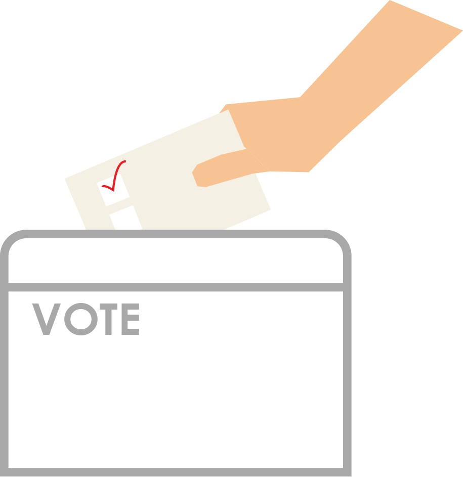

<h1 ng-init="vm.a();">Poll updated your vote has been cast.</h1>

<p></p>



<br><br><br>


<a href="/result"><button class="btn btn-success" id="revealPoll" name="showPoll" onclick="refresh()">Reveal Results</button></a>


